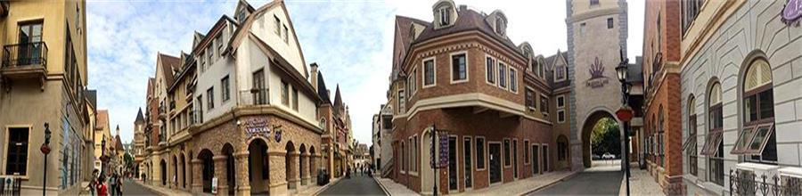
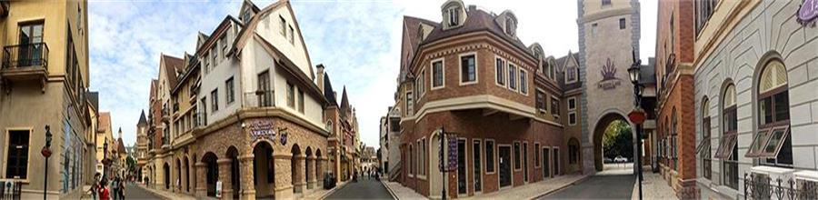

视其所好，可以知其人焉。 ——欧阳修
哪里没有兴趣，哪里就没有记忆—— 古罗马
惟有对外界事物抱有兴趣才能保持人们精神上的健康。—— 罗素
人生不可无梦，世界上做大事业的人，都是先由梦想来；无梦就无望，无望则无成，生活也就没兴趣。
个人爱好
本人性格温和，待人友好，为人诚实谦虚，善于思考，学习能力强。专业知识较扎实，对新事物接受能力快，工作主动性高,做事认真负责。但人非完人，自己在某些方面还是有一定的不足，比如知识，社会经验等，不过我相信这些都是可以通过自己努力的学习来提高的，我也正朝着这个方向努力!我愿意从最基础工作做起